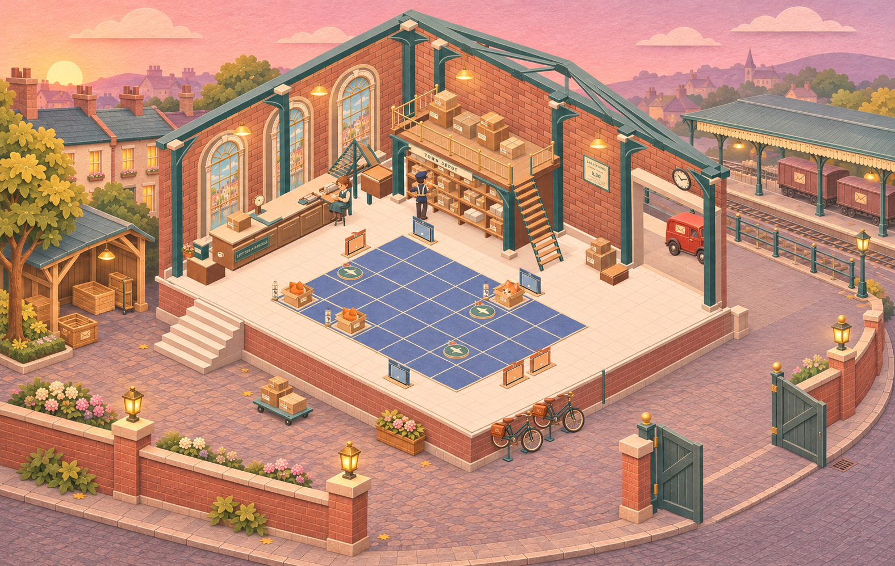
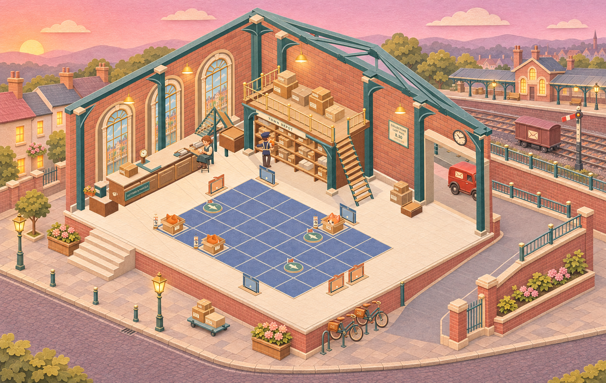
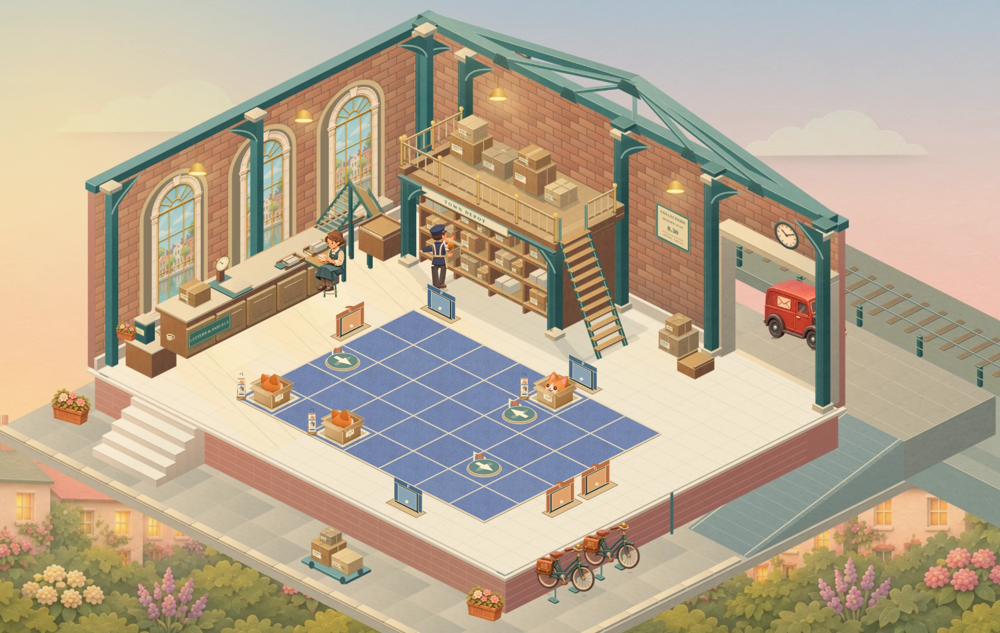

Composition 1
Station Street
A town address with nearby terraces, a continuous front pavement and a curved service ramp. The railway sits behind the loading yard.

Exterior direction only. The new apron railing needs a clearance check against the loading doorway and flap sightlines.
Open image for pinch-to-zoom
Inspect the pavement and goods entrance
Steps, pavement and bicycle parking share a continuous street frontage.
The ramp connects the raised loading apron to the road. Its width and turning radius will be measured in the playable section.
Composition 2
Sheltered Goods Court
A protected cobbled yard with open gates and a modest crate shelter. Town roofs and the station form a quieter backdrop to the working court.

The illustrated slope is implicit. The court, goods ramp and gate need explicit levels and a verified van turning path.
Open image for pinch-to-zoom
Inspect the pavement and goods entrance
A clear route from the front steps across the courtyard, with parcels held against the perimeter.
The gate opens to the street. The van must have enough room to turn and pass through on its existing schedule.
Composition 3
Railway Terrace
A broader pedestrian frontage and open dawn horizon. A distinct railway boundary, station and postal wagon give the Depot a stronger rail setting.

The image places the railway above the yard, despite the proposed cutting. Rail level and retaining-wall joins must be resolved together before implementation.
Open image for pinch-to-zoom
Inspect the pavement and goods entrance
Grounded street furniture and planting leave a generous pedestrian route in front of the hall.
Separate road and railway levels need a single consistent construction model. The van route remains on the road.
The accepted playable scene
These are actual renderer captures. They establish the board geometry and room details to preserve while building the chosen exterior.
 First delivery · 3-1 · 5 × 4
First delivery · 3-1 · 5 × 4
Maximum board · 4-15 · 7 × 5Play first delivery · Play maximum board
What the next section must prove
- Steps meet pavement; tyres, boxes, trees and walls have convincing contact and support.
- The goods approach connects to the street with a usable slope and van clearance.
- Near neighbours, station and distant town share coherent perspective, scale and dawn light, including through the windows.
- All four board sizes stay clear. The hall, postal schedule, gameplay and saves remain intact.
After selection, the next review is a playable exterior section around the stairs, bicycle parking and goods-ramp connection.